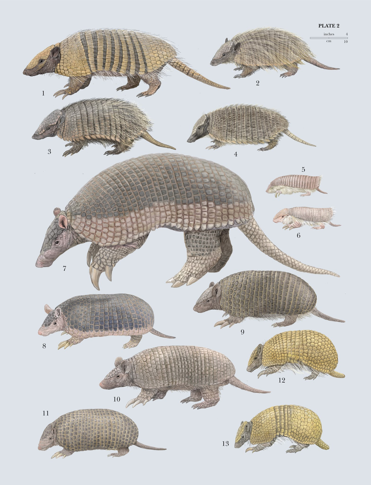
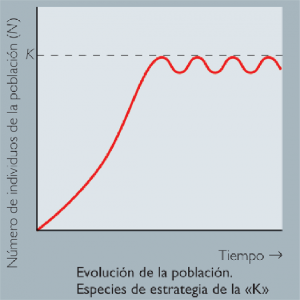

Atributos Poblacionales
Distribución Mundial y Nacional
Vive desde el sur de Estados Unidos hasta Uruguay y centro de Argentina; es el armadillo con la distribución más amplia. En México se le puede encontrar en la vertiente del Pacífico, en la planicie costera del Golfo, en la zona del eje neovolcánico y de ahí hacia los estados del sur-sureste del país. Habita en cuevas, huecos, pastizales, bosques tropicales y gran variedad de áreas
secas. Aunque parece más común en áreas húmedas, nunca se le ve bajo la tierra ya que no puede respirar bajo la misma.

Estatus de riesgo
Pese a que es considerado como especie de Preocupación Menor, los armadillos se encuentran amenazados en nuestro país, sobre todo el quirquincho de la Puna ya que es víctima de la caza para usos culturales y por el tráfico ilegal de su carne o coraza para fines ornamentales o de taxidermia, siendo éstas las mayores amenazas.
El segundo peligro para el armadillo son los atropellos en carreteras, así como también el desplazamiento de su hábitat producto de la repreducción del área silvestre. En Chile actualmente no se cuenta con información sobre el número de su población que permita determinar con mayor claridad su estado de conservación.

Depredadores
- Coyotes
- Gatos Monteses
- Pumas
- Lobos
- Osos
- Mapaches
- Su armadura o caparazón para poder defenderse de los depredadores; aunque aun así se lo comen xD
- Tiene un gran olfato y una garras tremendamente rápidas para poder escarbar para conseguir su alimento
- Puede inflar sus intestinos para aguantar más tiempo debajo del agua o para cruzar ríos y lagos sin tanta complicación


Densidad
Es un indicador que nos permite saber cuánta población habita en una zona territorial, por ejemplo: un país, una región, una comuna, etc. Así como también saber cuándo la población está concentrada o dispersa, respecto al territorio que habitan.
Los armadillos son naturalmente raros donde ocurren; dependiendo del área, sus densidades poblacionales varían entre 4,7 y 6,3 individuos por 100 km². Tienen áreas de vida muy amplias, de 450 a 1500 hectáreas.

Distribución Espacial
El armadillo gigante puede encontrarse en el norte y centro de América del Sur, siempre al este de los Andes. Ha sido registrado en Colombia, Venezuela, las Guayanas, Brasil, Ecuador, Perú, Bolivia, Paraguay y el norte de Argentina. Ocurre en altitudes hasta 500 msnm. Es un indicador que nos permite saber cuánta población habita en una zona territorial, por ejemplo: un país, una región, una comuna, etc. Así como también saber cuándo la población está concentrada o dispersa, respecto al territorio que habitan.

Reproducción
No se sabe mucho sobre la estrategia reproductiva de esta especie. Las hembras dan a luz a una, excepcionalmente dos crías por camada, pero no está claro si se reproducen todos los años. Las crías permanecen dentro de la madriguera durante la mayor parte de la lactancia de 4 a 6 meses. A veces las hembras dejan sus crías dentro de la madriguera y cierran la entrada para impedir que sean atacadas por depredadores.


Mortalidad (Causas)
Esta especie está amenazada por la caza (generalmente de subsistencia) para su uso como fuente de proteínas y, especialmente, por la pérdida y fragmentación de su hábitat debido a la deforestación, cambio de uso del suelo y agricultura. La captura de armadillos gigantes para su comercialización ilegal a coleccionistas de animales de alto
poder adquisitivo podría ser otra amenaza, pero es difícil de cuantificar.

Estrategia de sobrevivencia
Los armadillos a lo largo de su evolución han desarrollado la estrategia de evolución K ya que podemos observar un gran número de características de esta clasificación. Su tasa de natalidad es baja aproximadamente 2 crías por camada y ellos poseen una cualidad muy peculiar y es que las hembras pueden aplazar su lapso de embarazo para que el cachorro nazca en climas ideales. otro punto a destacar son las cualidades que han adquirido como mecanismo de supervivencia tales como:


Migración
Los armadillos por lo general viven en hábitats templados o cálidos, específicamente en bosques, praderas y zonas semidesérticas; por lo que su ubicación ha sido siempre en esos lugares ya que su peor enemigo es el frío y puede acabar con poblaciones enteras; por esta razón es que estos animalitos se quedan siempre en su hábitat y no necesitan en ningún
momento migrar.

Tipo de crecimiento poblacional
Crecimiento poblacional logístico
